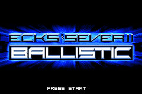
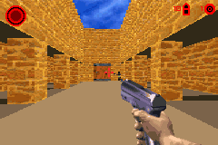

Ballistic: Ecks vs. Sever II

Not Complete on 2022-4-23
2 / 5
Release Date: Sep 14, 2002
Meta Score: 72
Screenshots


Notes
My complaints about the first game return. First person shooters on the GBA need to basically play like Duke Nukem or Doom, otherwise they're just going to be unfun.